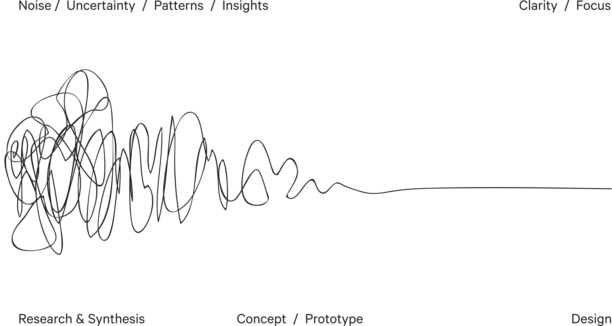

A journey through the art and science of data visualization
LH
Lennart Heuckendorf
Solution Engineer · Tableau
I'm Lennart Heuckendorf — Solution Engineer at Tableau.
13 years in the data space, from SAP and Hadoop pipelines
to Tableau dashboards and Salesforce analytics.
I've spent my career bridging the gap between
raw data and the people who need it most.
TableauPythonRSalesforceSAPAWSGCPDockerKubernetes
Customer Visits
Today's Agenda
01
The Beautiful Science of Data Visualization
Historical masterpieces that changed how we see the world
02
How You Build Data Visualizations
From raw numbers to meaningful visual patterns
03
How You Answer Data Questions
Tools, techniques, and the role of AI in analytics
04
How to Tell a Data Story
Turning insights into compelling narratives that drive action
What You Will Learn Today
1
What makes data visualization so important —
and why our brains are wired to think visually
2
How we think about the world —
the mental models behind effective data communication
3
Who actually benefits from AI advancements —
and how trust becomes the deciding factor
Data Visualization History
Charles Joseph Minard
Napoleon's March to Moscow, 1869
Considered by many the greatest statistical graphic ever drawn
Line ColorEncodes direction — beige for the advance, black for the retreat
Line ThicknessRepresents army strength — 422,000 soldiers entered Russia, only 10,000 returned
Line HeightShows temperature during the deadly winter retreat
Six variables in a single image: army size, direction, location, time, temperature, geography
Data Visualization History
Florence Nightingale
Mortality Causes in the Crimean War, 1858
Nightingale was a pioneering statistician as much as a nurse
Wedge AreaEncodes the number of deaths — the larger the wedge, the more deaths
Clock OrientationRepresents time — each wedge is one month, rotating like a clock
ColorDistinguishes cause of death — blue for disease, red for wounds, black for other
Showed preventable disease killed far more soldiers than combat — driving hospital reform
Data Visualization History
John Snow
Cholera Outbreak in Soho, London, 1854
Dot PlacementEvery death plotted at its exact street address — a deceptively simple idea
Spatial ClusteringDeaths grouped tightly around the Broad Street water pump
Pump RemovalTaking the handle off stopped the outbreak — early spatial epidemiology
Miasma RefutedProximity to the pump was the real variable, not bad air quality
Map as ProofThe chart didn't just describe the data — it solved a crisis
Data Visualization History
Hamburg Cholera Epidemic
Hamburg vs. Altona, 1892
The Epidemic1892 — over 8,600 people killed in Hamburg in just a few weeks
The BorderHamburg and Altona shared the same streets, divided only by a city border
HamburgDrew drinking water unfiltered directly from the polluted River Elbe
AltonaFiltered its water — deaths dropped sharply right at the city border
The ProofThe map made the invisible visible: same street, completely different outcomes
Visual Encoding — What Made These Charts Work
Minard
Napoleon's March, 1869
Line color — direction of march (advance vs. retreat)
Line thickness — army strength (soldiers remaining)
Line height — temperature during the winter retreat
Every insight follows the same cycle — and the cycle never really ends
The Design Process

This builds Trust
We trust the data · We trust the process · We trust our calculations · We trust our analysis
Recipients trust us
To trust our outcome, people need to trust us first. We genuinely trust humans more than machines.
Part 3 — How You Answer Data Questions
Putting data in everyone's hands
Learning Curve
Even great tools take time to master
Just Ask
Natural language as a data interface
Instant Answers
Ask a question, get the answer
Blind Trust?
Trust without doing the work yourself
AI Lies
You've caught it hallucinating before
The Trust Problem with AI
This is why we need reliable AI
Sounds Right
Trained to be plausible, not precise
Your Data
Grounded in reality, not guessing
Verifiably Correct
The answer must be provably right
Show Your Work
Show the query, show the numbers
Natural Language Analytics
Veezoo
Ask your data questions in plain language.
Veezoo connects directly to your data warehouse
and returns verified, explainable answers —
no hallucinations, no guessing.
The Complete Picture
Two tools, 100% of the workforce
Visual Analytics
For analysts and data-fluent users.
Explore, build, and tell stories with data. Deep insights · Rich visuals · Full control
+
Natural Language AI
For every business user without training.
Ask a question, get a verified answer. Instant · Grounded · Explainable
How to Tell a Data Story — Inspiration
What We Learned Today
Six ideas worth remembering
Visual Encoding
Color, size, and position carry meaning before a word is read
Always Visualize
Same statistics, completely different shapes — charts reveal what numbers hide
Pre-attentive Attributes
The eye sees contrast before the brain reads — design for instant attention
Analytics Workflow
Question → Data → Insight → Act — and repeat. The cycle never ends
Trust is Everything
Show your work — transparency is what makes insights believable
AI + Visual Analytics
Two tools that together reach every person in the organisation